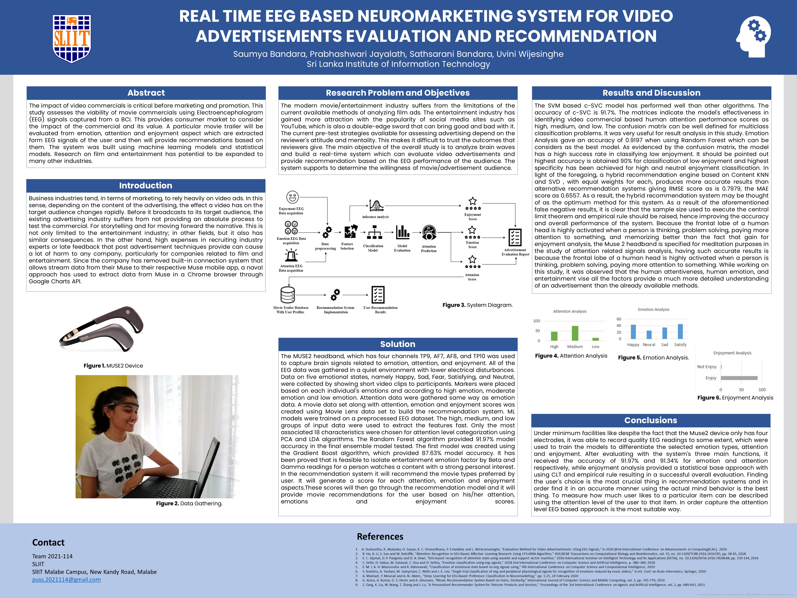

Domain
This section provides domain knowledge about the research project Ad Evaluator.
Literature Survey
▪ Attention Analysis
Human attention can be various levels in each moment. Usually when a
film is to be
released, some time ago its trailer is release first. The trailer must be able to attract a
large audience. The first impression of the audience should be high about the trailers.
For that, there must be points that need to be brought to the attention of the audience.
The human attention can be in diverse ways on different points. However, the attention
is to be categorized as low, medium, and high. There are previously published research
papers, that classified the attention of the audience into various levels. And
There are researches where analyze the main categories of EEG signals and classify
them according to the main categories of EEG signals Alpha, Beta, Gamma, and Theta.
“EEG is an instrument for capturing electrical activity in the brain, which also
reflects state of mind. Direct visual observation of EEG signal is exceedingly difficult
due to its low amplitude and its complex pattern. In general, the nature of EEG signal
is non-stationary and random, increasing the complexity in EEG signal analysis”.
The combination of mind monitor application and Muse2 device plays vital role at the
initial stage and the ending stage. The most special factor is that the Brain-Computer
Interface does not require external devices or muscle intervention to issue commands
and complete the interaction. The overall idea is delivering an attentiveness
detection with calculating one score for mostly attended level attention for supporting
to make recommendation in real-time.
▪ Emotion Analysis
Emotions are a psycho-physiological and conscious experience that is characterized
by intense mental activity and is frequently associated with mood, temperament,
personality, and disposition, and motivation which are essential in everyday human
communication. Emotions can change over time as a result of a person’s experiences.
With the rapid development of technology in recent years, several new applications
for recognizing and analyzing human emotions have been developed. Brain Computer
Interface is a relatively new technology that has advanced in recent years to the point
where a user can capture brain signals using a small brain sensing device. The
frequency of brain signals is an important feature for capturing emotion from EEG.
These frequencies are classified into five groups: alpha, beta, theta, delta, and gamma.
Many studies on emotion analysis with EEG have been conducted in recent years.
Even in most early and recent research, correlation analysis methods were used to
identify patterns in various emotions. Many researchers have already tested various
emotion classification algorithms such as AMGLVQ, Decision Forest, Nave Bayes,
and SVM. Various types of induction methods, such as pictures, music, and films,
have also been used by researchers in previous studies. Using the results of emotion
classification, additional implementations such as movie classification and rating
systems can be created.
▪ Enjoyment Analysis
The emotion state "enjoyment," as examined in this study, is terrible about an
advertising and the similarity of the content with the viewers' minds, as well as with a
pleasure and a satisfaction. To intend the overall notion with an emotion such as sad
or joyful, it is quite difficult to quantify a sensation such as enjoyment. A sense of
delight, on the other hand, varies from person to person depending on their probability.
With the advancement of Machine Learning (ML) and Deep learning (DL) concepts
paved the path for research in classifying human undergoing emotional states via using
Common Spatial Patterns, and studying intended Deep Neural Network (DNN)
model to reveal the preferences from the EEG signals by using the prepossessed DEAP
data-set which is a publicly available database contain with recorded signal data,
frontal face videos for participants, self-reported data from stimuli-volunteers’ and
subjects’ self-assessments. EEG data has been utilized as a unique technique in
numerous prior studies to investigate how emotions develop throughout gaming.
The primary approach that researcher is involved with EEG-based emotion
classification using Convolutional Neural Networks (CNN) and formats into
spectrogram picture sizes were changed into 224x224x3 in order to categorize that
Neural network. Research depicted a test of hypotheses for probability
distributions across graphs. Non-parametric goodness of fit tests was utilized in
particular for hypotheses for random graph distributions. Eventually, it has been
demonstrated that it is a practical method to isolate specific states of emotion using
EEG with a statistical approach. Because human interests differ from person to person,
the system constructed a training sample that implies a general formula for
entertainment feature as an overall distribution in a real time approach.
▪ Recommendation System
Recommendation system is an intelligent system that provides the best way to identify
and recommend products based on user’s past behavior. These recommendation
systems will help the users to see only the relevant products according to the preference
and will personalized the sites appropriately. There are several types of
recommendation systems such as Collaborative Filtering, Content Based Filtering,
Hybrid Recommendation and Restricted Boltzmann Machine (RBM).
Some researches have combined user based and item based Collaborative Filtering to
implement a recommendation system for products and services. Researches have mostly
used Content Based Filtering to develop a movie recommendation system based on
user’s similarity. A hybrid approach is a method building a recommendation system
with a combination of two other models. Hybrid Recommendation can built
by combining Content Based and Collaborative Filtering to recommend movies for the
users. According to some researches RBM model has used with rating data with the help of
categorical features where RBM considered the number of hidden units which impacts
the performance of the model. This experiment has shown better recommendations
than the other models. Recommendation systems can be effective when using the
above-mentioned methods and it is also essential to capture EEG data to see user’s
engagement rather than relying on rating data to provide better recommendation
system.
Research Gap
The current approaches for video advertising in the business rely heavily on indicators such as ratings, likes, and reviews, as well as experts who assess them through surveys. Because their reviews might be biased and the method, they score is subjective, this does not always result in proper replies. These types of data collection and analysis will lead to incorrect conclusions. This suggested technique would analyze a user's likeliness to a certain movie trailer using EEG brain signals collected from the viewer. Although there have done previously researches related to advertisement evaluation methods there is no real time video advertisetment evaluation system that evaluate the advertisement using Emotion, Attention and Enjoyment aspect. Especially using human brain waves. Furthermore, the proposed system provides rapid feedback about advertising along with the recommendations.
Research Problem
The modern movie/entertainment industry suffers from the limitations of the current
available methods of analyzing film ads (e.g.: movie trailers) before releasing it to the
target audience. Not only is this restricted to the entertainment sector, but it also has
similar consequences in other sectors. Thus, the entertainment industry has gained
more attraction with the popularity of social media sites such as YouTube, which is
also a double-edge sword that can bring good and bad with it.
As pre-test techniques and post-test techniques, the current approaches available
for video advertising evaluation can be broken into two key groups. After a video
advertisement is released, post-test methods are used, while pre-test methods are used
before a video advertisement is published. The current pre-test strategies available for
assessing advertising depend on the reviewer's attitude and mentality. This makes it
difficult to trust the outcomes that reviewers give.
To demonstrate this, Metacritic and Rotten Tomatoes is some websites that collects
film reviewers' reviews. It also invites other people who have seen the film to provide
a review for it. They assess the film as sentimental analysis, where it is sometimes very
dubious whether the film critics offered their honest thoughts.
The EEG signals are the best and accurate way for measuring emotions that EEG uses
outside of the laboratory and gets into everyday life marketing purposes. Although
comparing to the previous research areas that have discussed attention, emotion and
entertainment analysis using EEG signals in the video advertising evaluation domain,
a smaller number of real-time data streaming studies proposed.
The various emotional labels can be plotted at different points on a 2D plane covered
by these two axes. Aside from the 2D model, other researchers have included these
linked action patterns into a 3D emotion model that incorporates various arousals. The
degree to which a person feels unconstrained or in charge of a situation, ranging from
weak to strong.
So, these kinds of emotions which are identified through this system regarding the
providing a solution for recommendation and evaluation while providing prominent
answers to following research questions from this research study.
▪ How to evaluate a video advertisement from the emotional aspect of the
audience?
▪ How to evaluate movie advertisement using human attention levels?
▪ What is the absolute method to evaluate the advertisement before it broadcast
for its target audience?
▪ How can we overcome the issues with the recommendation systems made with
using unreliable data?
Research Objectives
The main objective of the overall study is to analyze brain waves and build a real-time
system which can evaluate video advertisements and provide recommendation based
on the EEG performance of the audience. The system supports to determine the
willingness of movie/advertisement audience.
The study consists of four main components:
1) EEG-based emotion identification and performance scoring.
2) EEG-based attention assessment and performance scoring.
3) Video advertising evaluation based on enjoyment score.
4) Advertisement recommendation.
Methodology
▪ Environment and Participants
Randomly selected 18 movie enthusiasts between the age ranges of 16-34 and ensure
the participants are in a healthy state while excluding individuals who are in pregnancy
state, children or who are suffering from any mental disorders and neurological
abnormalities. All of the participants were in good health and not under the influence
of any drugs. All of the EEG data was gathered in a quiet
environment with lower electrical disturbances.
▪ Data Acquisition using MUSE2
The MUSE2 headband, which has four channels TP9, AF7, AF8, and TP10 to capture
EEG data, was used to capture brain signals related to emotion, attention, and
enjoyment. The Mind Monitor application was used to save the EEG readings into CSV (CommaSeparated Values) file format. Mind Monitor displays absolute values of EEG data
from the sensors in the headband at various frequencies. Data was collected in each
part of the system by attempting various visual activities.
According to EEG research, the main focus should be on how brain activity varies in
response to mental assertions and how to identify them properly. 18 movie lovers
between the ages of 16 and 34 were chosen at random and must be in good health, with
the exception of those who are pregnant or are suffering from any mental illnesses or
neurological abnormalities. All of the individuals were in good health and weren't
taking any medications.
a) Attention and Emotion Data Acquisition: Data on five emotional states, namely
Happy, Sad, Fear, Satisfying, and Neutral, were collected by showing short
video clips to participants. When a specific clip begins to play, an EEG
recording begins, and markers were placed based on each individual’s
emotions and according to high emotion, moderate emotion and low emotion.
Attention data were gathered same way as emotion data. The markers were
placed according to high, medium, and low attention levels.
b) Enjoyment Data Acquisition: For the study determine participants to select
their most favorite advertisement which participants have ever watched for the
purpose of train the sample data from 10 participants.
c) Recommendation Data Acquisition: A movie data set along with attention,
emotion and enjoyment scores was created using Movie Lens data set to build
the recommendation system. The scores were gathered from the EEG data
when the user is watching the movie trailer.
▪ Data Pre-Processing
Noise and artifacts contaminate EEG signals in general. To increase the quality of the
signal and the accuracy of the desired output, it is critical to prepare EEG to decrease
or eliminate these artifacts. Electronic amplifiers, power line interference, and external
interference all contribute to the noises. These aberrations are mostly caused by
flashing eyes and head, shoulder, knee, and finger movement, which contaminate EEG
signals and spread across many channels. A band pass filter will be used to filter the
brain waves.
Filter in the frequency band of 0.5-50 Hz to isolate the data corresponding to the five
rhythms. These filtered out data were categorized into delta (0.5 – 4Hz), theta (4 –
8Hz), alpha (8 - 13Hz), beta (13 – 32Hz) and gamma (32Hz and up) Hence sometimes
null values can be occurred in the data set because Muse2 device does not fit well with
some forehead shapes. The EEG data captured and exported include unnecessary sets
of data columns such as data related to eye blinks, jaw clenches, muscles movement,
device accelerometer, device battery power status etc. These immaterial columns and
null value containing rows were removed from the data set.
Technologies


Poster
Milestones
A milestone is a major event that occurs throughout the course of a project and is used to track progress toward predetermined milestone targets.
Topic Assesment & Charter
Obtain approval from the panel for our study proposal, as well as the accuracy in implementing the system.
Proposal Presentation
Communicate the Ad Evaluator's first concept to the stakeholders and those who are interested in the system. The research methodology and overview were presented.
Allocated Marks: 5%
Project Proposal Report
The project proposal document is an important instrument that aids in the organization of time and resources in order to finish the project to a high quality. It's also an informal contract to develop an agreement on the final output's content and limitations. The panel of judges assessed if the research project was up to par and whether it was a unique topic during the proposal presentation. They pointed out several flaws in the presentation and offered recommendations for how to address them.
Allocated Marks: 5%
Progress Presentation 1
All four individuals must present their implemented sections of the research components during the presentation; 50% of the research part must be finished for this evaluation. While each group member was speaking, the panel evaluated them and provided us with valuable feedback.
Allocated Marks: 15%
Final Report
Final research report was submitted individually by 4 of the members as well as a group report for the overall system. This should be a highly polished document in the correct format which represents the culmination of the research. The primary motive of final research report is to convey integral details about a study for marketers to consider while designing new strategies. Research report is a reliable source to recount details about a conducted research and is most often considered to be a true testimony of all the work done to garner specificities of research.
Allocated Marks: 19%
Progress Presentation 2
During the presentation, all four members must present their implemented parts of the research components; 90% of the research part must be completed for this evaluation. The panel evaluated each group member as they spoke and offered us with useful comments.
Allocated Marks: 18%
Final Presentation& Viva
The purpose of the final presentation is to verbally communicate the group's process to answer a question using data. A slideshow with appropriate visuals and text should be utilized. This is the group's opportunity to enthusiastically share the research findings with the panel. It includes a short intro, the hypotheses, a brief description of the methodologies and technologies used, tables and/or graphs related to the findings, and an interpretation of data. All 4 member should present their work individually in front of the panel.
Allocated Marks: 20%
Documents
All the submitted project documents are available below.

Project Charter
Project Proposal
Status Document 1
Final Report
Status Document 2
Research Log Book
Presentations
All the submitted project presentations are available below.

Proposal Presentation
Progress Presentation 1
Progress Presentation 2
Final Presentation
About Us
Meet the team.
Mr. Prasanna S. Haddala
Supervisor
Ms. Lumini Wickramasinghe
Co-Supervisor
Saumya Bandara
Group Member
Prabhashwari Jayalath
Group Member
Sathsarani Bandara
Group Member
Uvini Wijesinghe
Group Member